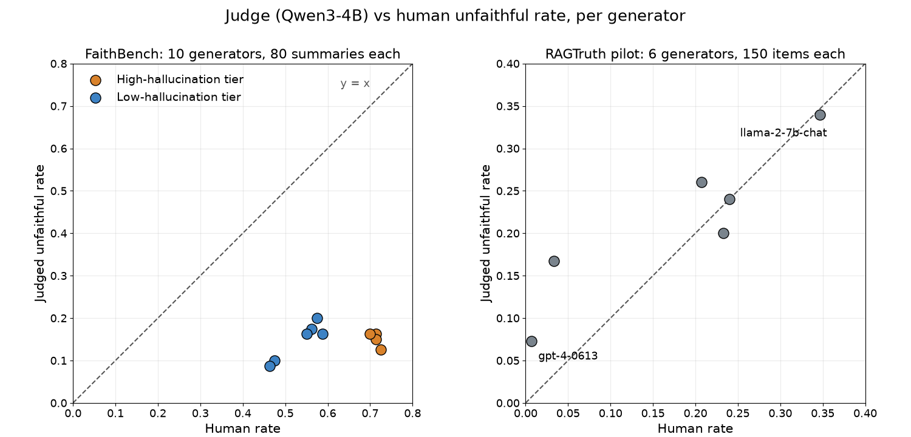

I was looking into local LLMs and how to run them on my PC. My machine has a 6 GB graphics card, which I thought could run some LLMs or SLMs. I already knew that frontier or large models were out of scope for it. Using a local model for something short and quick was what I wanted to try. In my thesis, I showed that classifying a user query helps, and I did that with a small local model. Judging an output is costly, so I thought off-loading it to my free GPU might bring the cost down. The first test passed, so I ran a second one on fresh data from a different dataset. That one failed badly. A second idea I had planned alongside it, a layered judge, came closer to its target.
What I tested
The judge's job was to check whether a RAG answer sticks to its source (faithfulness), the task a large paid model usually does. I tried two small-model ideas on public data and committed the rules in git, with tagged freezes, before I computed any result. Everything ran locally and no paid API was called.
The judges were MiniCheck-Flan-T5-Large (Tang, Laban and Durrett, EMNLP 2024), a small fact-checking model, and Qwen3-4B-Instruct-2507 (Qwen3 Technical Report, 2025) in 4-bit as a yes/no judge.
I wanted models that fit in 6 GB, so I looked for open instruct models that are not gated, and I added MiniCheck because it was built for fact-checking. On 5 October 2026 I set up the first run with three judges: MiniCheck, Qwen3-4B and Phi-4-mini-instruct. Qwen2.5-3B and SmolLM3 were on my list too, but four models of that kind would have taken about 18 hours of GPU time, against the about six hours I budgeted for the run, so I dropped them. The first results, written up on 6 October, showed Qwen3-4B with the best kappa on RAGTruth (0.307, against 0.240 for MiniCheck and 0.140 for Phi-4-mini). That is why it became the primary judge, and I picked it after seeing those numbers. The plan I froze on 28 October (prereg-AB-frozen) kept Qwen3-4B as primary, with MiniCheck and Phi-4-mini exploratory; MiniCheck was also the first stage of the cascade. The FaithBench plan (prereg-B2-frozen, the same day) kept Qwen3-4B as primary and MiniCheck as exploratory. A third model, Phi-4-mini, ran as an exploratory judge in the pilot and did worst of the three; its results are in the repo. I did not run it on FaithBench.
A few measures appear below. Kendall tau-b is rank agreement between two lists, from -1 (reversed) to 1 (same order), corrected for ties. Cohen's kappa is agreement between two raters corrected for chance: 0 is chance level, 1 is perfect, and negative values mean worse than chance. Balanced accuracy averages the true-positive and true-negative rates. A bootstrap 95% interval comes from resampling the data 1,000 times and taking the middle 95% of the results.
The data
- RAGTruth QA (Niu et al., ACL 2024). Question-answering answers from six generators, with human annotators marking hallucinated spans; I count an answer as unfaithful if it has at least one span. I used it for the pilot because it has an official held-out test split that needs no sampling, and six generators with human labels, so the generators can be ranked. The pilot used all 900 answers in that split. For the cascade test I also built 300 items from the train split, using the 681 matched clean and hallucinated answer pairs that RAIM uses (Onofri and Di Pietro, "RAIM: Robust Aggregation of Inexpensive Models for Hallucination Detection", arXiv:2609.39229, 30 September 2026, a preprint that has not been peer reviewed). I sampled 150 items of each class without keeping the pairs. RAGTruth is one of the two main sets for the cascade test, and RAIM describes it as a core-grounded set.
- FaithBench (Bao et al., NAACL 2025). 800 summaries: 80 source documents, each summarized by the same 10 LLMs. Several annotators marked spans as Benign, Questionable or Unwanted, and I counted a summary as unfaithful when its worst label was Unwanted. I chose it from a short list of labelled sets with several generators, because it has human labels for summaries from 10 different LLMs, so each generator gets a human rate and the 10 can be ranked. It was fresh because no judge had seen any of its items before I froze the plan. I only found, when checking the file after my first plan, that all 10 had summarized the same documents.
- WiCE (Kamoi et al., EMNLP 2023), taken through the LLM-AggreFact collection. An item is a claim plus a web article as evidence, labelled supported or not. I used 172 items (86 supported, 86 not). It is the other main set for the cascade test.
- XSum, CNN and ExpertQA subsets of LLM-AggreFact: 300, 64 and 300 items, with equal numbers drawn from each class; CNN stopped at 64 because its smaller class ran short of items. These are the rest of RAIM's claim-verification sets. My plan listed them as exploratory, and this article reports only the two main sets.
Each of the cascade-test sets also had 50 items held out for calibration.
The pilot passed
The first idea was ranking. A judge that ranks whole generators only has to say which systems hallucinate more, so it can be wrong on many single items if its per-generator rates follow the human rates.
The pilot ran on the six generators in the RAGTruth QA test split, 150 items each. Human annotators put hallucination rates between 0.7% for gpt-4-0613 and 34.7% for llama-2-7b-chat. Qwen3-4B flagged 7.3% of gpt-4's answers and 34.0% of llama-2-7b's. Kendall tau-b between human and judge rates was 0.733, with a 95% interval of [0.414, 1.000], and the three quality tiers (high, middle and low hallucination rate, fixed before the run) came out in the right order. My rule said scale. The exact permutation p-value was 0.056, and I had written down that six units cannot carry a significance claim.
Fresh data killed it
I froze a second plan, prereg-B2-frozen, before any judge saw the new data: FaithBench. The prompt, the 0.5 cut and the model were unchanged from the pilot. Scale needed tau-b of at least 0.5 and the right tier order between a High and a Low tier of generators, fixed in advance from the human rates. Kill meant a wrong tier order or tau-b below 0.3.
| RAGTruth pilot | FaithBench confirmation | |
|---|---|---|
| Generators | 6 | 10 |
| Items per generator | 150 | 80 |
| Kendall tau-b, Qwen3-4B | 0.733 | 0.048 |
| 95% bootstrap interval | [0.414, 1.000] | [-0.167, 0.523] |
| Tier order correct | yes | no |
| Item-level kappa / balanced accuracy | 0.161 / 0.587 | 0.030 / 0.518 |
| Pre-registered verdict | scale | kill |

The permutation p-value was 0.92. The lowest judged rate in the High tier (0.125, Qwen2.5-7B) sat below the highest in the Low tier (0.200, claude-3-5-sonnet). Of the High-Low generator pairs, 42% had the judge ordering them the right way, below the 50% a coin gives. Averaging the probabilities instead of using the 0.5 cut gave tau-b of 0.045, so the cut was not the cause. The judge also under-flagged: 9% to 20% of summaries per generator against 46% to 73% from annotators.
What surprised me
I only wanted to know whether a small local judge could predict the faithfulness of large models' answers at all. When it ranked the models mostly in line with the human annotators, that piqued my interest. When the 0.048 came back on the fresh data, my whole note on it was one line: kill the ranking idea, so what's next? After that disappointing result from Qwen3-4B, MiniCheck, an even smaller model tuned for fact-checking, turned out to do better than Qwen, though it still failed the rule I had set. The cascade did better on at least one dataset, but it still fell short of its target score.
What the small model can still do
The second idea was a cascade, the layered judge from the opening: a fast small model checks every item, and only the items it is unsure about go to the slower judge. MiniCheck answers first. When its probability is far from 0.5 its verdict stands, and unsure items go to Qwen3-4B, which takes about 19 seconds per WiCE item against a fraction of a second for MiniCheck. The confidence threshold was picked out-of-fold (5-fold cross-fitting), so it was not tuned on the items it was scored on.
The target was set in advance: Cohen's kappa had to reach 0.9 times the Claude Sonnet kappa that the RAIM preprint reports for that dataset (Sonnet 0.548 on WiCE and 0.601 on RAGTruth, so targets of 0.493 and 0.541). The Sonnet figures come from RAIM's own samples, which differ from mine, so the comparison is indicative at best. As a loose check of my pipeline, my MiniCheck kappas matched RAIM's within my intervals on all five sets.
On WiCE (172 items) MiniCheck decided 81% of items on its own (out-of-fold), and kappa on those items was 0.502. Over all items, the cascade's kappa was 0.488, just under the 0.493 target. Its error rate was 0.256 against 0.244 for Qwen3-4B alone; the difference of 0.012 has a 95% interval of [-0.041, 0.081], so the cascade made no measurable difference to errors. Expected time per item fell from 18.79 s to 3.50 s. On RAGTruth (300 items) the same cascade let MiniCheck decide 21% of items on its own, which met the 20% coverage gate (the minimum share MiniCheck had to decide alone), but its interval of [0.027, 0.577] is very wide and its kappa over all items was 0.313 against a target of 0.541. The rule needed both datasets to reach their target, and neither did (WiCE 0.488 against 0.493, RAGTruth 0.313 against 0.541), so the verdict was iterate.
Limits
- FaithBench items were chosen where five existing detectors disagreed most, so the data is hard for detectors by construction. About 60% of summaries are labelled "Unwanted", far above natural rates. Two of those five detectors (GPT-4o and GPT-3.5) are also generators in the list.
- All 10 generators summarized the same 80 source documents, so the summaries are clustered by document. The intervals come from a bootstrap over documents, and the result holds for that document sample only.
- With 80 summaries per generator each rate has a binomial interval of about plus or minus 11 points. The High and Low tiers are about 11 points apart (0.59 against 0.70), so the test could resolve the coarse split and not the order inside a tier. The six RAGTruth generators have the same problem: the middle four differ by 1 to 6 items out of 150.
- The tiers come from the human labels, which are the answer key. I placed the boundary at the largest gap in this dataset's own human rates, before any judge output existed. That makes the tier check partly circular, which is why tau-b over all 10 generators was a second criterion.
- I used one prompt and one uncalibrated 0.5 cut. A calibrated cut might rank better; I did not run it.
- Dropping GPT-4o and GPT-3.5, the two detectors that are also generators, moved tau-b to -0.615 with an interval of [-0.692, 0.315] on the remaining 8 generators, and the tier order still failed. That check was exploratory.
- Qwen2.5-7B is one of the generators and the judge is Qwen3-4B, so they share a model family. Dropping that generator gave tau-b of 0.216 with an interval of [-0.141, 0.657], and the tier order still failed. That check was exploratory.
- The B2 plan froze with open objections. A Gemini model audited it for three rounds and still asked for changes, among them the strict tier rule and the uncalibrated cut. I froze anyway and listed the open points in the file. They could have made the kill easier to hit. The result also fails on tau-b alone (0.048 against the 0.3 floor), which does not depend on the strict tier rule.
- The cascade target comes from the RAIM preprint's samples, which differ from mine, and the analysis is a re-analysis of data and models I had already seen in an earlier run; I picked the primary model after those results (see the judges paragraph above). The RAGTruth set came from RAIM's matched pairs but I sampled 150 of each class without keeping the pairs, and the other sets drew equal numbers per class, so none has the natural mix. The 300 RAGTruth items are also skewed toward one generator (148 of 300 are gpt-4). Treat the cascade result as a lead worth confirming.
Where this leaves the judge
A cascade, or a small model tuned for the task, can act as a gate in front of a larger judge, so the larger model only sees the difficult cases. Next I want to retest the cascade on fresh data, and I still have to measure what it costs at scale. Until then, I would use a small model only where it rarely passes an unfaithful answer as faithful, and where wrongly flagging a good answer costs little.